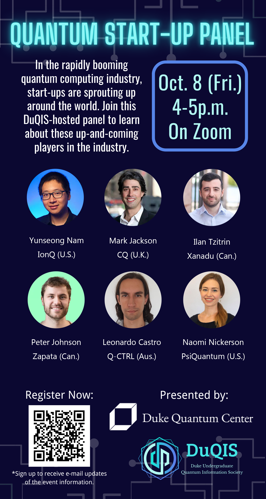

Events
HackDuke X DuQIS. Cambridge Quantum
As part of HackDuke, Dr. Mark Jackson from Cambridge Computing will be hosting a quantum computing workshop in Hudson Hall 125 on Oct 23 @ 3-4 p.m. More details can be found on HackDuke's 2022 website: Hacker Guide.

Quantum Coffee Chat. Dr. Mark Jackson
Join us for a coffee chat with Dr. Mark Jackson (BS Physics & Math '99) from Cambridge Quantum (CQ) this Friday (10/22) from 3-4PM at the rooftop of Nicholas School of Environment or Gross Hall 105, depending on weather. Coffee and donuts will be provided at the event!

HackDuke X DuQIS. Quantum Computing and Qiskit 101 Workshop
DuQIS is collaborating with HackDuke this year to add a Quantum Hack to 2021 Code for Good. We will give a 1.5 hour workshop for those interested in incorporating quantum into their projects on October 17 - the week before the formal hackathon. Topics include:
- Part 1. What a quantum computer is, how powerful it is, and how to actually do quantum computing.
- Part 2. How to build/write a quantum circuit using IBM's Qiskit toolkit and run it on IBM's real quantum computers.
Location: 330 Gross Hall, Ahmadieh Family Grand Hall.

Quantum Start-Up Panel
In the rapidly booming quantum computing industry, startups are sprouting up around the world. As quantum technology grows out of physics labs into the real world, a diverse range of career opportunities emerge in the field of quantum computing, from research, engineering, to business. Nonetheless, these startups face unique challenges as the current technology has yet to mature. To learn about the roles these startups play in the race to build/use the first practical quantum computer, Duke Undergraduate Quantum Information Society (DuQIS) is hosting a panel (Oct 8, Fri, 4-5PM EST) featuring research scientists, engineers, and business leads from 6 pioneering quantum startups around the world (see flyer).

Quantum Movie Night! I
Come watch Particle Fever at the first Quantum Movie Night, a DuQIS and SPS collaboration! Find out how physicists at CERN discovered the Higgs Boson 50 years after it was theorized in an exciting first-person account! Popcorn, snacks, and drinks will be provided!

DuQIS Information Sessions.
We will be talking about how you can get involved with quantum computing at Duke and with DuQIS. You can find a detailed outline, location, date and time in the flyer.

Duke House Course. Applied Introduction to Quantum Computing.
This half-credit House Course targets students who are interested in basic quantum information and simple applications of quantum computing using IBM's open source framework Qiskit. The course will take on an applied approach with only basic python programming and linear algebra required. Towards the end of the course, there will be several special topic guest lectures on several areas of active research in quantum computing.

Summer High School Quantum Course. qBraid + Duke
DuQIS is partnering with a quantum startup company called qBraid to offer a free introductory quantum course for high school students around Durham during summer (from July to August, meeting twice per week). The course will cover the very basic and only assume students with regular high school algebra background. All course materials (slides, code, homework, etc.) are provided by qBraid.
Read More
Quantum Computing Industry Panel.
DuQIS, DTech, and DAML are hosting a quantum industry panel on Tuesday March 2nd from 5:30-7 PM EST, featuring quantum researchers from Google, Honeywell, IBM, Microsoft, and Rigetti. If you are interested in careers in quantum, it's a great opportunities for you to learn about opportunities in the industry. See more details in the poster!
2020-03-02, 5:30pm EDT to 7pm EDT
Quantum Supremacy. Google Quantum Hardware Group.
Demonstrating that a real quantum computer can outpace the world's most powerful classical computers at any task is a key milestone towards practical quantum computing. In this talk, Dr. Jimmy Chen will discuss the development of a programmable quantum processor named Sycamore, which consists of 53 superconducting qubits with state of the art operational fidelities.

Quantum Computing 101. Workshop.
Are you interested in quantum computing and quantum information (QC/QI) but don't know where to start? DuQIS is hosting our first QC/QI workshop for people with all kinds of backgrounds! We will introduce you to the world of QC/QI and what a quantum computer can achieve, including: Quantum algorithms (simulation, search, factoring, etc.), how it works (quantum superposition, entanglement, measurement), current challenges for quantum computing, and much more!

Game Night!
DuQIS will be having our first social event on Friday 10/15 at 7:30PM EST on GatherTown. Come meet us and join in for a round of Among Us or Codenames!
Explore GatherTown!
Introducing Cambridge Quantum Computing.
Dr. Mark Jackson (Duke Physics & Math BS '99) will introduce Cambridge Quantum Computing, a UK-based company dedicated to quantum computing software. This will consist of a short summary of what quantum computing is and the state of the field, followed by specific applications including machine learning and optimization (for financial and industrial applications) and chemistry (for pharmaceutical and material science applications). He will also introduce the quantum compiler "t|ket>" and discuss access to quantum processors including IBM and Honeywell.

The Women In Quantum Summit II.
The OneQuantum Women in Quantum Summit will bring together the leading Women in Quantum from around the world as they talk about their quantum journey in academia, government, investing and entrepreneurship. Catherine Liang, DuQIS's co-founder and co-president, is invited to share her experience.
2020-09-29 to 2020-10-02
Graduate Student Panel. Quantum Information Club at NCSU.
Join us for a panel with graduate students from four different universities to learn about what studying quantum computing and quantum information in graduate school is like. Not sure if you want to do graduate schools, what you want to stud, or what graduate school really means? Join us to find out, and bring questions!
2020-09-24, 6pm EDT to 7pm EDT
Hackathon. IBM Qiskit SummerJam.
DuQIS just hosted the week-long IBM Qiskit Community SummerJam Hackathon (North Carolina) from June 24th (Wed) to July 1st (Wed). All the projects were developed in Qiskit which is a language based on Python, and every participant was able to run quantum circuits on the actual IBM quantum hardware!
Read more